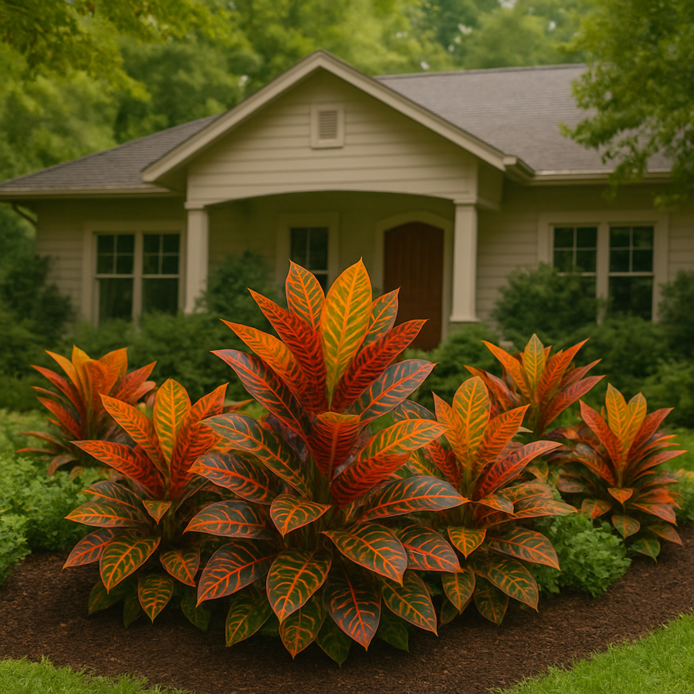

Croton: Folhagem Exuberante e Cuidados Essenciais para Ambientes com Gatos

O Croton (Codiaeum variegatum) é conhecido por suas folhas vibrantes e coloridas, que vão do verde ao amarelo, laranja e vermelho, tornando-se um destaque em qualquer composição decorativa. Essa planta tropical, além de extremamente ornamental, possui uma presença marcante e é muito utilizada tanto em vasos quanto em canteiros de jardins tropicais.
Origem e Características
Originário das florestas tropicais do Sudeste Asiático e Oceania, o Croton é um arbusto perene com folhas coriáceas e variegadas. A coloração de suas folhas pode mudar de acordo com a luz recebida e o estágio de desenvolvimento da planta, o que confere um dinamismo único ao seu visual.
Croton é Seguro para Gatos?
Infelizmente, o Croton é uma planta tóxica para gatos. Todas as partes da planta contêm um látex irritante que pode causar sintomas como salivação excessiva, vômitos e irritação gastrointestinal se ingerido. Por isso, é fundamental posicioná-lo em locais de difícil acesso e observar o comportamento do seu pet caso haja contato acidental.
Luz e Local Ideal
Para manter as cores intensas e vibrantes, o Croton precisa de luz solar indireta intensa. Ele pode tolerar algumas horas de sol direto, especialmente no início da manhã ou no fim da tarde, mas deve ser protegido do sol forte de meio-dia para evitar queimaduras nas folhas.
Rega e Umidade
O Croton prefere substratos que permaneçam levemente úmidos, mas nunca encharcados. Regue de forma regular, permitindo que a camada superficial do solo seque entre as regas. Em ambientes com ar seco, borrifar água nas folhas ajuda a manter a umidade e evita o ressecamento das bordas.
Temperatura e Resistência
Esta planta se desenvolve melhor em temperaturas entre 20 °C e 30 °C. Não tolera frio intenso nem correntes de ar, que podem provocar queda de folhas e perda de vigor. Em regiões mais frias, é recomendável mantê-lo em ambientes internos bem iluminados durante o inverno.
Uso Decorativo
Com sua folhagem multicolorida, o Croton funciona como ponto focal em qualquer ambiente. Em jardins tropicais, pode ser usado para formar bordaduras exuberantes ou composições com outras espécies tropicais, como costelas-de-adão e marantas. Em interiores, fica incrível em vasos de cerâmica ou cimento cru, que realçam a intensidade das cores.
Curiosidades
As folhas do Croton mudam de cor com o tempo e podem apresentar diferentes padrões na mesma planta, criando um efeito visual dinâmico. Em algumas culturas, ele já foi utilizado para delimitar áreas sagradas e é considerado um símbolo de vitalidade e energia vibrante no feng shui.
Para quem ama plantas tropicais, o Croton é uma verdadeira explosão de cores. No entanto, se você convive com gatos, é essencial planejar bem seu posicionamento ou buscar alternativas seguras que ofereçam beleza sem riscos para seus pets.
Produtos indicados

Kit de Jardinagem em Madeira com Rastelo
Conjunto de ferramentas resistentes em madeira para cuidados com vasos e hortas pequenas.
Comprar
Gotejadores e Dosadores para Irrigação
Facilite a irrigação de vasos e hortas com dosagem controlada de água.
Comprar
Argila Expandida 3L
Perfeita para drenagem de vasos e composição de substratos leves e arejados.
Comprar
Húmus de Minhoca Verde Home
Fertilizante natural que melhora o solo e promove crescimento saudável das plantas.
Comprar
Perlita Expandida para Substrato
Melhora a aeração e drenagem do substrato, essencial para diversas plantas de interior.
Comprar
Casca de Pinus para Substrato
Substrato natural e decorativo, ideal para orquídeas e outras plantas epífitas.
Comprar